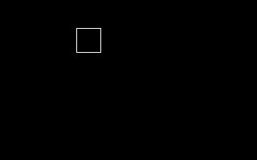
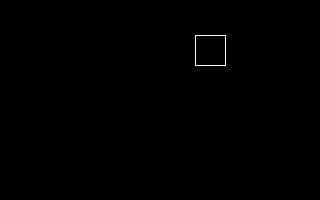
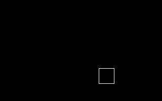
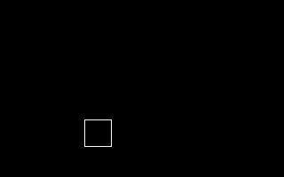

| [ < ] | [ > ] | [ << ] | [ Up ] | [ >> ] | [Top] | [Contents] | [Index] | [ ? ] |
SQUAREXT
Syntax:
SQUAREXT sidelength [ xoffset yoffset ]
The square extension, SQUAREXT, is the simplest extension. It
simply draws a white square outline on a black background.
SQUAREXT requires a single positive integer, sidelength,
which specifies the size of the square to draw. It can also take the
integer position arguments, xoffset and yoffset to move the
square from the origin (center of the picture).
In the complete testlist below, each %I command creates one
picture, which consists of a square outline drawn in white on a black
background with a side length of 30 pixels, in varying positions around
the origin.
%X[SQUAREXT.CXR] %M2%C2 %I[1,30,-50,-50] %I[1,30,50,-50] %I[1,30,50,50] %I[1,30,-50,50] #B[1,20]#R #B[2,20]#R #B[3,20]#R #B[4,20]#R |
This example creates pictures like these:
 |
 |
 |
 |
SQUAREXTImplementation